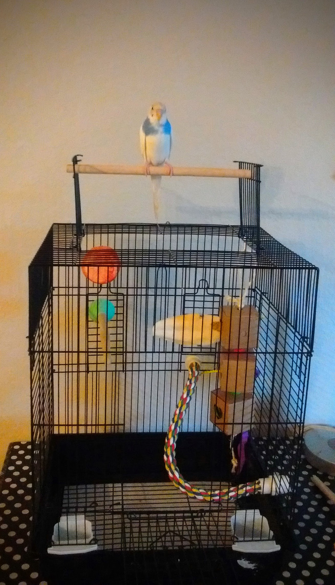

Cages
I bought this cage from Amazon even before I bought Apollo, so that I could have it all set up and ready as soon as I found the budgie that I was going to bring home. I chose this one because it has (some) horizontal bars, which it turns out is hard to find despite that being the recommendation for budgies, who love to climb. Also because of the convertible top; having the option for an "outside" perch was ideal in the beginning, before I found a play gym.
When I first brought Apollo home his wings were clipped and I found that the size of this cage was sufficient, though if I had got two budgies it would have been way too small. With a couple of perches for him to hop to and from, and with a couple of toys as well, he still had plenty of room to flap his shortened wings.
Apollo eventually got very good and climbing (and sometimes dive bombing) in and out of the top, so I whenever it was safe I opened it up so he was free to do as he pleased. I preferred this to leaving the front door open because I was worried he'd get a foot stuck in the sliding part.
Once he molted however, I let his flight feathers grow to their full length. After that this cage was not big enough to leave him in all day while I was not home, so I bought him a flight cage. I will keep this little one as a travel cage though, and as a place for him to play.
I was kind of baffled when I went looking for an appropriate sized cage for Apollo. There are lots of fancy and expensive option for larger cages, but most of them are tall, as opposed to wide, and have vertical bars as opposed to horizontal ones. Budgies fly laterally so they need wide cages, and the love to climb so horizontal bars are preferred (though Apollo has no problem climbing along vertical bars now either).
My research told me that Petsmart had my best option, so I headed out there to pick one up. When I got to the birdcage aisle the cage I wanted was nowhere to be seen. They had a similar one, but it had three roof peaks instead of a flat top, which is stupid because they’d be in the way of his flying thus defeating the purpose. But then I noticed an empty space on the shelf. The girl who was working there went in the back to check it out for me and came back with a cardboard box, which she opened up to show me the colour. “We have these green ones, and pink ones if you prefer.” Gross. “You don’t have any black ones eh?” “Well, this one has black bars and just a green base, the other one has white bars with a pink base.” “No, I prefer this one.” Maybe they were just out of stock of the black ones, maybe they don’t exist, but I had to buy this one because I really didn’t want to put off getting a bigger cage any longer. Maybe I can paint it, I’ve read of people using baby safe paints to repaint cages. I’ll look into it further and get back to you.
At first I was a little hesitant to just leave the swinging door open to let Apollo come in and out freely because I was scared it would slam shut on him and break his feathers or squish his toes. But under close supervision I let him play on the door, and it turns out it’s ok because this cage is heavy duty enough that the door stays open even when Apollo lands and takes off from it. It’s awesome actually, because the door is also big enough that Apollo can fly right in and out!
At first I was a little depressed about the new cage. The color bothered me. And I loved that little first cage, with its open roof and light sliding doors. And I think it allowed Apollo and I to bond quickly because I could get very close to him, with the bars still between us so that he knew he was safe. Because of that I’m very glad I started with that cage, I really think it helped with the taming process. However, buying the flight cage was the right thing to do; check out Apollo’s new favourite past time in this video. (He does this whether the cage is open or closed, lol.)